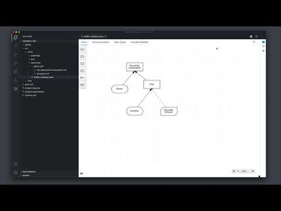

How to maintain DMN models on Business Central and VSCode
Currently, the DMN editor is supported in a variety of environments. You can create a DMN model in an online editor, in a chrome extension, in a desktop app, in a VSCode extension, and even on Business Central.
Until the latest release, you could face some differences between a model created by VSCode and a one created by Business Central. Now, this post aims to demonstrate that both environments are fully compatible by showing the same project from two perspectives: I) how to create a project on VSCode and import it on Business Central, and II) how to create a project on Business Central and import it on VSCode.
Let’s check both environments.
–
The VSCode perspective
Let’s get started to understand how to use VSCode to handle a DMN file in a context of a Business Central project by relying only on VSCode.
- In a shell prompt, enter the following
mvncommand to create a project:
mvn archetype:generate \
-DarchetypeGroupId=org.kie \
-DarchetypeArtifactId=kie-kjar-archetype \
-DarchetypeVersion=7.44.0.Final \
-DartifactId="Some Application" \
-DgroupId="org.kie" \
-DartifactId="vscode-2-bc"
- When the archetype plug-in switches to interactive mode, accept the default values for the remaining fields
- After generating your project, create a DMN asset at the
src/main/resources/<your package>directory and populate it with some interesting decision, like the one in the video:

- Now, initialize the git repository for your project, add all files, and commit them:
git init && git add . && git commit -m "Init"
- Use
pwdto get the local path of your project - Open the Business Central spaces screen, click on Import Project, and set
file://<the local path of your project>as the Repository URL
{kind=link}
- Done! You’ve successfully created a Business Central project relying only on your terminal and on your VSCode DMN editor! 🎉
–
The Business Central perspective
Alright, now let’s do the opposite. Let’s create a project on Business Central and import it to VSCode.
- Create a project on Business Central in the spaces screen
- Create a DMN asset and populate it with some interesting decision, like the one in the video above
- Now, click on “Settings” to open the project settings screen
{kind=link}
- Copy the HTTP URL of your project
{kind=link}
- Clone the URL of your project
- Open the project directory with VSCode
- Done! You’ve successfully opened your Business Central project with VSCode. You can now perform changes into your DMN mode, commit them with git, and the Business Central will automatically detect them
–
I hope you’ve enjoyed this quick tutorial! Stay tuned for new DMN features! :-)